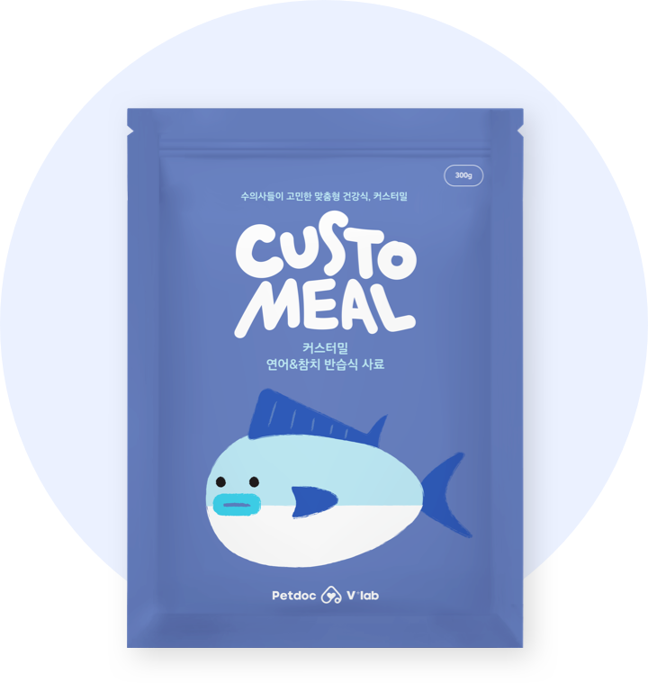
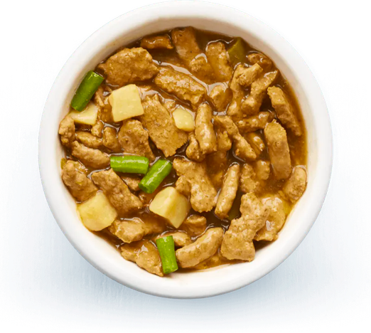

커스터밀 연어&참치
일일 권장 급여량 선150g

사료의 성분
- dot
하나가 좋아하는 닭고기를 주재료로 한 단일 육류의 반습식 사료를 추천 드립니다.
- dot
커스터밀 주식 사료는 곡물 성분을 첨가하지 않았으며 원료의 종류를 최소화하여 식이성 알러지를 예방할 수 있습니다.

성분 상세보기하루 권장 칼로리
연령주기
- dot
하나는 3세 1개월로 연령주기는 성년기 입니다.
- dot
성년기 반려동물의 경우 적정 체중을 일정하게 유지하는 것이 중요합니다.

개월 이하 성년기
개월 - 개월 노년기
개월 이상
몸무게
- dot
하나의 품종은 포메라니안으로 소형견 입니다.
- dot
하나의 몸무게는 7kg으로 성년기 포메라니안 표준 몸무게를 기준으로 보았을 때 표준입니다. 계속해서 정상체중을 유지할 수 있도록 하루권장량을 지켜서 급여해주세요.
kg 이하 표준
kg - kg 비만
kg 이상
* 위의 표준체중 범위는 성년기 기준입니다.
* 같은 품종이라도 반려동물마다 각자 골격이 달라서 표준 체중이 다를 수 있습니다. 표준 몸무게는 참조만 해주세요.
특수 상황
하나는 임신 5주 상태로 충분한 영양 공급이 이루어 져야 합니다. 6주 이상의 임신 후기에는 사료의 급여량 도 늘려야 하니 권장 급여량을 참고하여 급여 해주세요.
급여 가이드
- dot
심바의 1일 권장 급여량 150g을 1일 2회로 나누어 급여해주세요.
- dot
동봉되어 있는 계량컵을 사용하여 사료량을 측정하여 급여해주시면 됩니다.
가격
- dot
주식 사료 100g당 0,000원
- dot
보조 영양제 7g당 0,000원
* 내 반려동물의 1일 권장 급여량과 급여 기간에 따라서 가격이 다르게 책정됩니다.
* 커스터밀 맞춤식은 일반적인 건강관리 및 예방차원의 보다 전문적인 식단을 제공하고 있으나, 질병을 직접적으로 치료하는 식단은 아님으로 질병 치료식은 가까운 동물병원에 문의하시길 권장합니다.